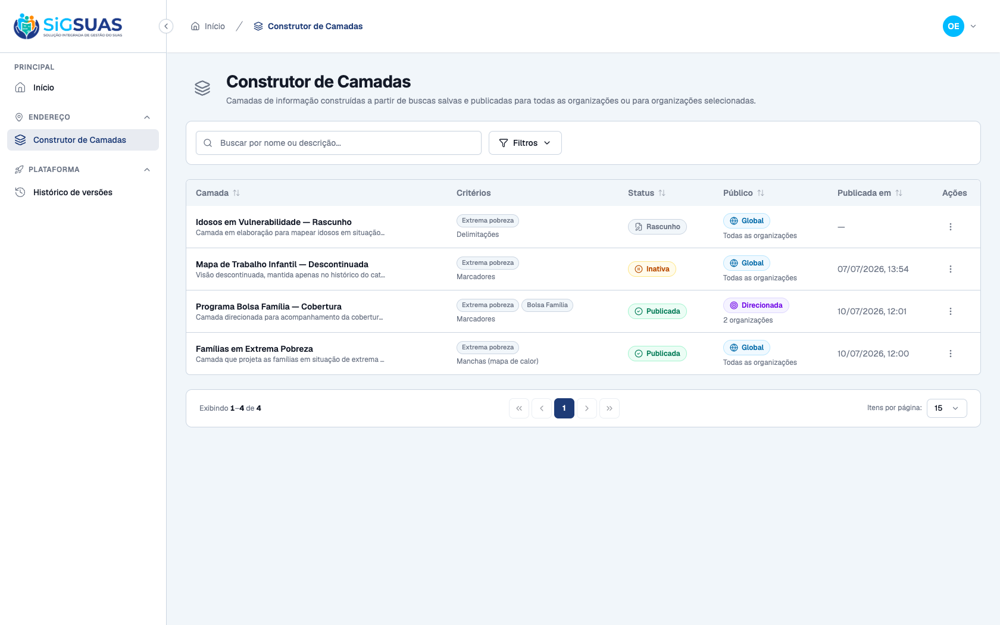
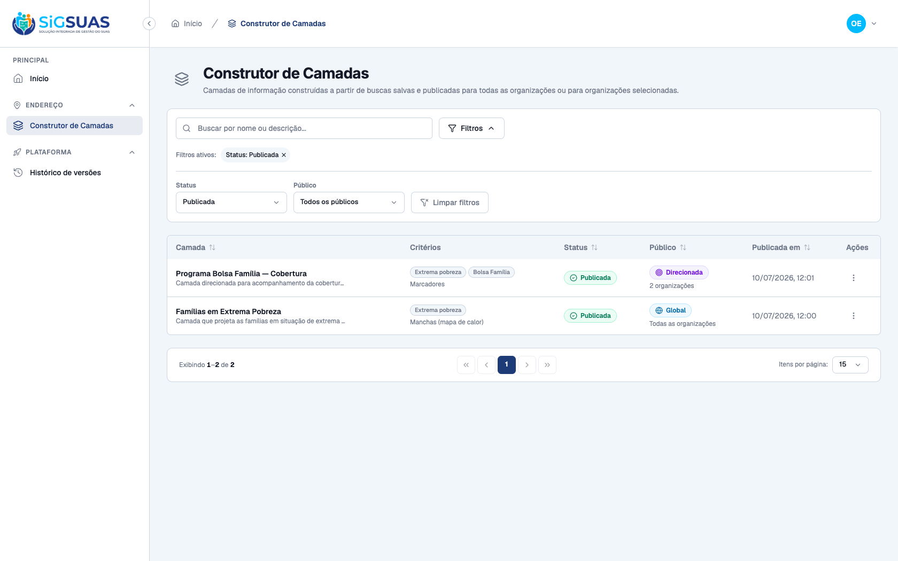
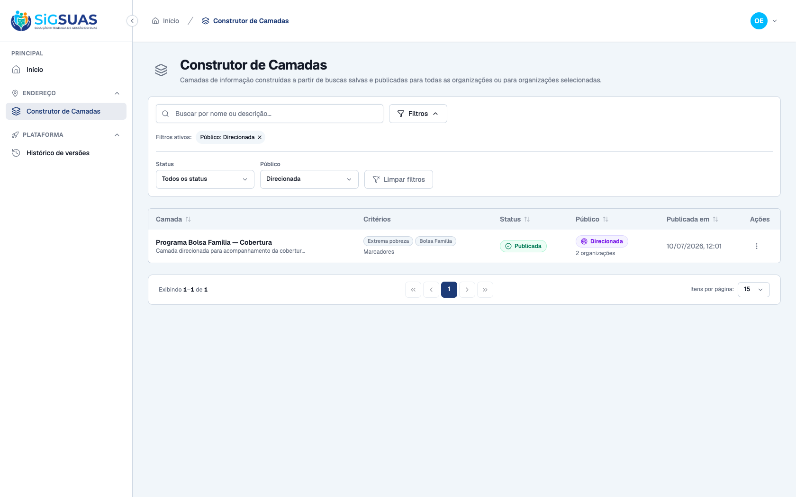
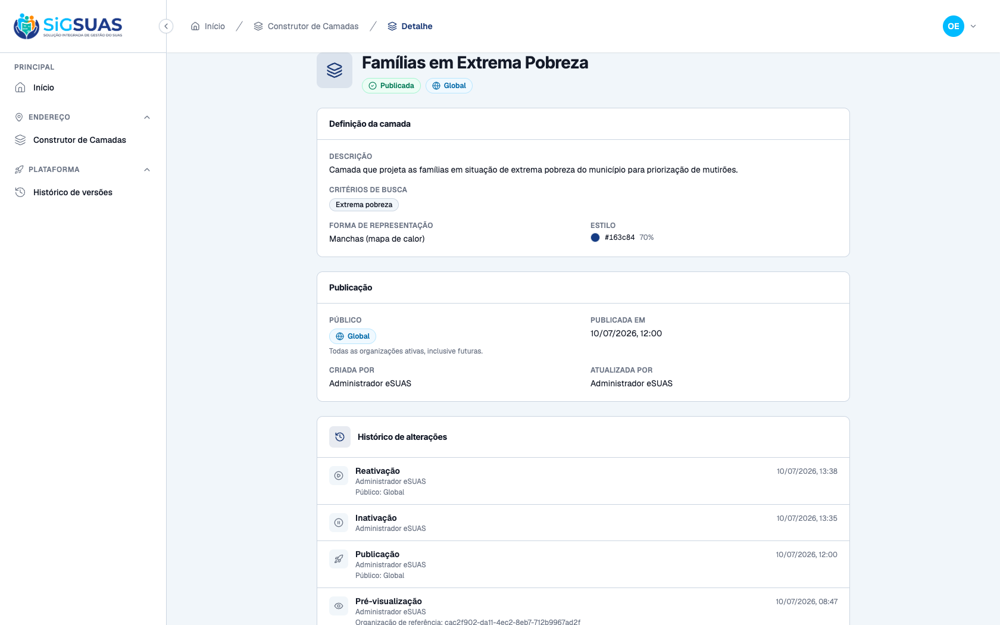
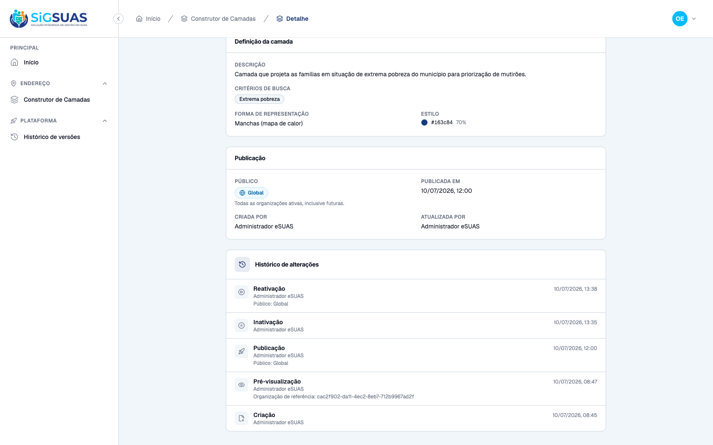

Os 2 critérios de aceite da HU #9886 sobre a consulta do catálogo de camadas do Construtor de Camadas (rota admin /geo-layers), na persona Operacional Global (acesso somente de consulta — geo-layers.index/show), foram verificados dirigindo o app admin real no navegador e reforçados pela suíte automatizada — ambos ATENDIDOS. CA51: no catálogo (que já exibe Status e Público de cada camada), aplicando o filtro por status "Publicada" a lista passa a mostrar somente as 2 camadas publicadas (rascunho e inativa somem); aplicando o filtro por público "Direcionada", mostra somente a camada de público direcionado. CA52: abrindo uma camada, o detalhe apresenta nome, descrição, critérios de busca, forma de representação, público de publicação, status e o histórico de alterações (evento, autor e data/hora). A persona é read-only: o botão "Nova camada" e os comandos de escrita ficam ocultos (display:none via v-can). Cobertura automatizada: Pest GeoLayerControllerTest (26 testes/150 asserções) cobre a filtragem do catálogo por status e público (CA51) e o detalhe com os tenants do público e a trilha de auditoria completa (CA52).
| CA | Critério | Status |
|---|---|---|
| CA51 | Catálogo com filtros de consulta (status e público) | ATENDIDO · navegador |
| CA52 | Detalhe da camada (definição completa + histórico) | ATENDIDO · navegador |
Critério (Gherkin): Dado que acesso o catálogo de camadas, Quando aplico filtros por status (rascunho, publicada, inativa) ou por público, Então a lista exibe somente as camadas que atendem aos filtros.
Como foi testado: Como Operacional Global (99887766593), aberto o Construtor de Camadas (catálogo com as colunas Status e Público). Em Filtros: (1) status = Publicada; depois (2) público = Direcionada.



Critério (Gherkin): Dado que estou no catálogo, Quando abro uma camada, Então visualizo nome, descrição, critérios de busca, forma de representação, público de publicação, status e histórico de alterações.
Como foi testado: Como Operacional Global, aberta a camada "Famílias em Extrema Pobreza" (Ver detalhes).


=== Cobertura automatizada — GeoLayerController (CA51-CA52) === (executado ao vivo em 10/07/2026 contra a stack Sail) PASS Tests\Feature\Api\Manager\GeoLayerControllerTest ✓ it creates a layer as draft with normalized criteria and it shows u… 0.47s ✓ it blocks creation without name or without any criterion (CA38) 0.03s ✓ it rejects criteria outside the panel vocabulary (P3) 0.02s ✓ it blocks a duplicated name case-insensitively, but frees it after… 0.03s ✓ it filters the catalog by status and audience (CA51) 0.04s ✓ it shows the layer detail with audience tenants and the full audit… 0.04s ✓ it updates the current definition of a published layer (CA47) 0.02s ✓ it keeps the unique name rule on update, ignoring the layer itself… 0.03s ✓ it does not expose DELETE — the missing verb answers 405 (P5/RN06) 0.02s ✓ it blocks publish while BOTH national bases are not homologated (CA… 0.03s ✓ it publishes globally: empty pivot means every active tenant, prese… 0.03s ✓ it publishes to selected tenants only (CA43/RN04) 0.03s ✓ it requires the tenant list when publishing to a selected audience 0.03s ✓ it rejects publishing a layer that is not a draft (RN06) 0.02s ✓ it changes the audience of a published layer with immediate pivot s… 0.03s ✓ it only allows changing the audience of published layers (RN06) 0.02s ✓ it inactivates a published layer and rejects invalid transitions (C… 0.03s ✓ it reactivates an inactive layer back to the CONFIGURED audience (C… 0.03s ✓ it revalidates the RN03 gate on reactivation (CA44/CA49) 0.02s ✓ it rejects reactivating a layer that is not inactive (RN06) 0.02s ✓ it previews the layer under the single reference tenant — WYSIWYG,… 0.05s ✓ it never leaks another tenant of the same municipality into the pre… 0.05s ✓ it rejects the preview when the reference tenant has no homologated… 0.03s ✓ it requires a valid tenant_uuid on preview 0.02s ✓ it gives the admin_operador read-only access — every write is 403 (… 1.08s ✓ it gives the ADMIN every geo-layers ability through the automatic h… 1.06s Tests: 26 passed (150 assertions) Duration: 3.71s